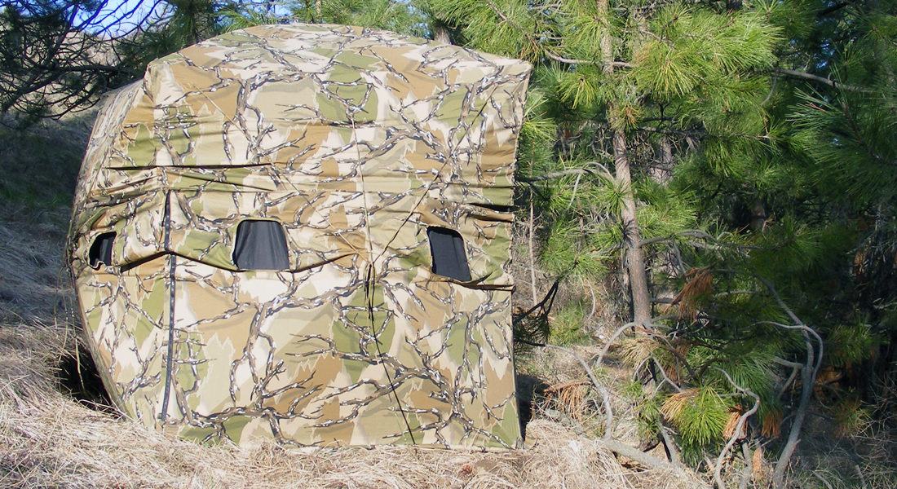
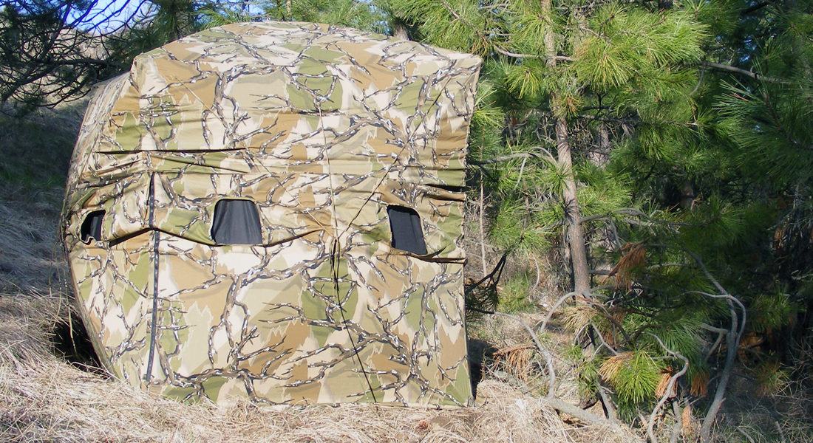
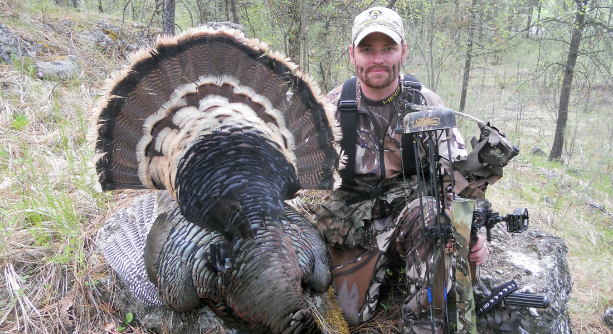

Blind Luck
May 19, 2017
Turkey hunting has many hardships. The struggle to obtain permission to hunt on private land or the constant battle with other hunters on public ground can be frustrating. It wasn’t until just a few years ago that I really began to enjoy turkey hunting…and it all happened because of a little ‘blind luck’. It all started with a hike. I was hiking an area not too far from my home on the West plains of Spokane County in Washington. It was an area I went often. It wasn’t an easy hike, all uphill, but once you got to the top it had a stunning landscape with pine ridges that flowed down to wheat fields below. I would see both whitetail and mule deer, but never any turkeys on these hikes…until that day. Well, I didn’t actually see any turkeys that day, but the feather I found laying in the road made it evident that they were there! So, I decided to spend a little more time scouting in hopes that I might just catch a glimpse. Season 1: I had been scouting the area for nearly 2 months and had located not just one, but two flocks of turkeys that totaled nearly 25. I knew that it was going to be a great season! It wasn’t often to find public ground with the possibility of having it all to yourself! During my many scouting trips, I discovered where these flocks liked to roost, where they liked to go to water and a pine ridge where one mature gobbler used as his primary strutting area.
Having knowledge of a flock's habits is crucial to a successful hunt. During this hunt, Chad discovered where this flock liked to roost, where they liked to go to water and a pine ridge where one mature gobbler used as his primary strutting area.
I decided to place a ground blind on this ridge in hopes of getting a close encounter with the gobbler. On opening morning of turkey season I found myself eagerly waiting inside my blind, which was tucked into a heavily covered pine tree on the East slope of the mountain. I could see the sun peaking through the trees in front of me as the subtle sounds of yelps, clucks, purrs and gobbles trickled from the mountain above. I new that it wouldn’t be until later that morning that I could expect the gobbler, so I waited patiently. At 10:30, I looked up to see a tail fan appear. It faded away quickly, but moments later the turkeys head appeared, like a periscope, in the same spot. Just as I had imagined, the gobbler began displaying again and worked slowly up the ridge toward my location. It was ideal! I sat with my Mathews bow propped against my leg as the gobbler’s wing feathers dragged against the bare dirt. All the vegetation had been trampled down from his previous exhibitions in this same spot. With the tail fan pointing toward me, I lifted my bow and began to draw. The gobbler knew something wasn’t right and dropped his strut. My sight pin quickly settled on the wing joint and I made the shot. The gobbler traveled less than fifty yards down the ridge before expiring. Months of scouting had made for an exciting opening day hunt!

The use of a ground blind can give a hunter a great advantage by concealing his or her movement. After many hours of scouting this flock of turkeys, Chad placed his hunting blind near the gobbler's primary strutting area. Note: When placing a blind always make sure it is securely staked.
Turkey hunting has many hardships. The struggle to obtain permission to hunt on private land or the constant battle with other hunters on public ground can be frustrating. It wasn’t until just a few years ago that I really began to enjoy turkey hunting…and it all happened because of a little ‘blind luck’. It all started with a hike. I was hiking an area not too far from my home on the West plains of Spokane County in Washington. It was an area I went often. It wasn’t an easy hike, all uphill, but once you got to the top it had a stunning landscape with pine ridges that flowed down to wheat fields below. I would see both whitetail and mule deer, but never any turkeys on these hikes…until that day. Well, I didn’t actually see any turkeys that day, but the feather I found laying in the road made it evident that they were there! So, I decided to spend a little more time scouting in hopes that I might just catch a glimpse. Season 1: I had been scouting the area for nearly 2 months and had located not just one, but two flocks of turkeys that totaled nearly 25. I knew that it was going to be a great season! It wasn’t often to find public ground with the possibility of having it all to yourself! During my many scouting trips, I discovered where these flocks liked to roost, where they liked to go to water and a pine ridge where one mature gobbler used as his primary strutting area.
Having knowledge of a flock's habits is crucial to a successful hunt. During this hunt, Chad discovered where this flock liked to roost, where they liked to go to water and a pine ridge where one mature gobbler used as his primary strutting area.
I decided to place a ground blind on this ridge in hopes of getting a close encounter with the gobbler. On opening morning of turkey season I found myself eagerly waiting inside my blind, which was tucked into a heavily covered pine tree on the East slope of the mountain. I could see the sun peaking through the trees in front of me as the subtle sounds of yelps, clucks, purrs and gobbles trickled from the mountain above. I new that it wouldn’t be until later that morning that I could expect the gobbler, so I waited patiently. At 10:30, I looked up to see a tail fan appear. It faded away quickly, but moments later the turkeys head appeared, like a periscope, in the same spot. Just as I had imagined, the gobbler began displaying again and worked slowly up the ridge toward my location. It was ideal! I sat with my Mathews bow propped against my leg as the gobbler’s wing feathers dragged against the bare dirt. All the vegetation had been trampled down from his previous exhibitions in this same spot. With the tail fan pointing toward me, I lifted my bow and began to draw. The gobbler knew something wasn’t right and dropped his strut. My sight pin quickly settled on the wing joint and I made the shot. The gobbler traveled less than fifty yards down the ridge before expiring. Months of scouting had made for an exciting opening day hunt!
The use of a ground blind can give a hunter a great advantage by concealing his or her movement. After many hours of scouting this flock of turkeys, Chad placed his hunting blind near the gobbler's primary strutting area. Note: When placing a blind always make sure it is securely staked.
Season 2: All good things must come to an end, and it was obvious that my second season hunting the flocks of turkeys I had discovered the previous year would be much different. It was known by other hunters that there were turkeys hidden in these hills, so I was going to have to change my tactics! With pressure from other hunters, I decided that a ground blind would not be my best option! I needed to be mobile! Turkeys have great eyesight, and can quickly spot the most subtle movement, so I went to work making sure that my bow was thoroughly camouflaged. I used hot glue to attach pieces of ‘army netting’ onto the riser, limbs and quiver of my bow. I figured I could use the bow to hide myself. Along with this, I decided to make my own decoy to draw the approaching gobblers attention to. I wanted it to be realistic so I used the tail fan from the gobbler I had arrowed the season before. I made a form that surrounded the base of the tail feathers and had two stakes inserted into it. I filled the form with expandable insulation foam, which made the stakes and tail feathers into a single unit. Once it had dried, I mounted it to an old ‘jake’ turkey decoy that I had found. Opening day was much different that the previous season. Before daybreak, I hiked to the top of the mountain and positioned myself 200 yards from the flocks roost trees. During scouting trips, I had found a few different locations where the turkeys liked to frequent and I built natural blinds out of limbs and brush in these spots. I knew I could be mobile and move from one spot to another as needed. I placed the decoy I had built 20 yards in front of me and got settled into the natural blind. I don’t like to call when turkeys are still in the roost, so I sat quietly. The flock was beginning to awake and make noise. I could faintly hear a hunter using a call from the opposite side of the roost area. “Perfect”, I thought,
Turkeys have excellent eyesight and can spook from the most subtle movement. Drawing back a bow without being spotted can be a challenge!
“If the turkeys have any sense of danger approaching from the other direction, they will most likely come my way!”. The sound of flapping wings began as one turkey at a time descended from the trees above and landed on the uphill side of their roost. But, instead of moving my way, they vanished over the ridge and out of sight. I grabbed my decoy and headed to my second blind location, hoping to intercept them there. Before, I was able to get to the blind, I spotted the gobbler strutting on the top of a timbered knoll. I ducked out of sight, and scanned the terrain for a possible setup. There was one vein in the hillside that got me fairly close to the gobbler’s location. “If I could get to that spot, I might be able to place the decoy within sight of the gobbler and entice him with a few calls”, I thought. I decided to put the plan into action! I stayed out of sight of the gobbler, and worked slowly around the ridge to the void in the hill. I was now within 100 yards of the gobbler! He continued to strut, as 8 hens fed just below him. With very little movement, I slowly put the decoy out and backed away from it. My best option was to set myself behind a huge pine tree that was 10 yards from the decoy. I slid into position and made my first call. I don’t like to call loudly, so I made a few low volume yelps with my mouth reed. I had gotten the gobblers attention. He was instantly drawn to my location. With a flash of anger, the gobbler came rushing down the hill toward the decoy! The huge pine worked great! I drew my bow, before the gobbler stepped out from behind the tree. The gobbler was now within feet of the decoy! I put my sight pin on the gobbler and shot striking him in the wing feather as he was quartering away. The gobbler disappeared over the ridge and out of sight. Moments later I found him expired in a web of tangled brush just 60 yards from where I had arrowed him.
By modifying his decoy and making sure to pay close attention to his camouflage, Chad Berry was able to arrow this gobbler without the use of a blind.
Making Memories
April 30, 2017
Glen Berry was able to call this great longbeard gobbler in for Adam Schmitz during Washington's youth turkey hunt! Adam made a perfect shot from 15 yards. Adam's gobbler has an 11 1/4" beard and spurs over 1" in length.
Joel & Bodie Turner, along with Glen Berry made some great memories while hunting turkeys in Washington state with archery tackle, taking three mature gobblers in 2 days of hunting!

Glen Berry was able to call this great longbeard gobbler in for Adam Schmitz during Washington's youth turkey hunt! Adam made a perfect shot from 15 yards. Adam's gobbler has an 11 1/4" beard and spurs over 1" in length.
Joel & Bodie Turner, along with Glen Berry made some great memories while hunting turkeys in Washington state with archery tackle, taking three mature gobblers in 2 days of hunting!
Make the Move
April 23, 2017
After several attempts to lure a raggedy, old "Tom" into bow range, I was able to arrow this mature gobbler. The key to success on this hunt was being mobile! Sometimes you just aren't in the right spot. Moving a ground blind just a couple hundred yards can make all the difference. On this hunt I was able to watch the flock of turkeys from my blind and pinpoint the areas they frequented the most often.
After 4 days of hunting Chad Berry was able to call this gobbler from 300 yards to within 15 yards for a fatal shot.
After 4 days of hunting and moving the blind 3 times, I positioned myself on a ridge where I had watched a gobbler for several hours the previous day. The ridge had a good clearing that allowed my decoys to be visible from more than one direction. After being in the blind for only 30 minutes, I was able to call two gobblers within bow range, the largest gobbler coming from 300 yards to within 15 yards for a fatal shot.
Pairing the use of a 'Jake' decoy and calling is a great way to bring a boss 'Tom' into close range.
After several attempts to lure a raggedy, old "Tom" into bow range, I was able to arrow this mature gobbler. The key to success on this hunt was being mobile! Sometimes you just aren't in the right spot. Moving a ground blind just a couple hundred yards can make all the difference. On this hunt I was able to watch the flock of turkeys from my blind and pinpoint the areas they frequented the most often.
After 4 days of hunting Chad Berry was able to call this gobbler from 300 yards to within 15 yards for a fatal shot.
After 4 days of hunting and moving the blind 3 times, I positioned myself on a ridge where I had watched a gobbler for several hours the previous day. The ridge had a good clearing that allowed my decoys to be visible from more than one direction. After being in the blind for only 30 minutes, I was able to call two gobblers within bow range, the largest gobbler coming from 300 yards to within 15 yards for a fatal shot.
Pairing the use of a 'Jake' decoy and calling is a great way to bring a boss 'Tom' into close range.